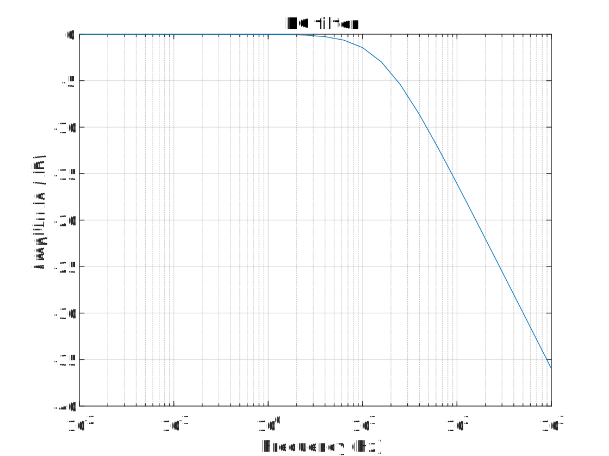

AC analysis
AC analysis allows you to find the behavior of a circuit for small signals. The circuit is solved for a specific operating point, after which small perturbations are applied. The result of this analysis indicates how the circuit behaves for these small perturbations. When doing this, the circuit can be significantly simplified. The perturbations are considered to change with a certain amplitude and frequency. The frequency is swept by the analysis.
Consider the following circuit:

To simulate this, we can write
// Build the circuit
var ckt = new Circuit(
new VoltageSource("V1", "in", "0", 0.0),
new Resistor("R1", "in", "out", 10.0e3),
new Capacitor("C1", "out", "0", 1e-6)
);
ckt.Objects["V1"].SetParameter("acmag", 1.0);
// Create the simulation
var ac = new AC("AC 1", new DecadeSweep(1e-2, 1.0e3, 5));
// Make the export
var exportVoltage = new ComplexVoltageExport(ac, "out");
// Simulate
ac.ExportSimulationData += (sender, args) =>
{
var output = exportVoltage.Value;
var decibels = 10.0 * Math.Log10(output.Real * output.Real + output.Imaginary * output.Imaginary);
};
ac.Run(ckt);
For AC analysis we need a source for our perturbations. The amplitude and phase of the excitation can be set by using the acmag and acphase parameters for Voltage source.
The frequency points that are simulated range from 10mHz to 1kHz, simulating 5 points per decade, logarithmically spaced.
Plotting the output amplitude (dB) yields the following graph:
